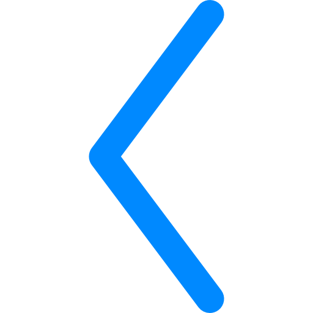
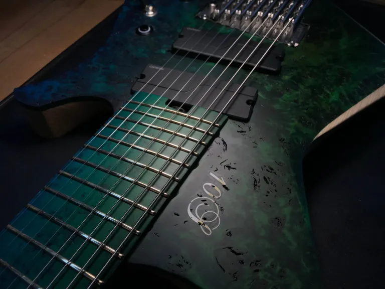
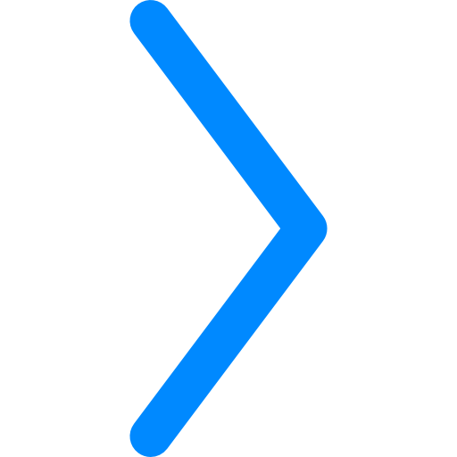

¿Por qué una guitarra de rango estendido?
¿Como eljir una?
¿Cuales son las mejores?
SI te has hecho alguna de estas preguntas, o alguna otra, te ivitamos a recorrer nuestro sitio en busca de estas respuestas, conocer mas o simplemente disfrutar de lo nuevo, lo que se viene o lo existente, te invitamos a recorrer nuestro sitio
Las guitarras de rango extendido, ya sean de 7, 8 mas cuerdas, se han vuelto increíblemente populares entre los músicos modernos. El rango extendido permite a los músicos tocar música más baja sin desafinar, manteniendo un tono enfocado y agresivo, mientras que todavía pueden bombear riffs gruesos en las cuerdas más bajas